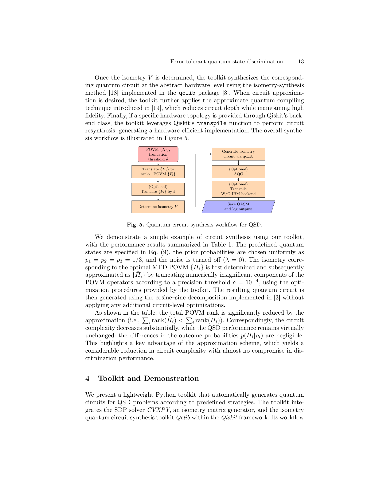

저자: Chien-Kai Ma, Bo-Hung Chen, Tian-Fu Chen, Dah-Wei Chiou, J. R. Jiang | 날짜: 2026 | DOI: 10.1007/978-3-032-22749-2_22

Fig. 5. Quantum circuit synthesis workflow for QSD.
양자 상태 판별(QSD)에서 노이즈에 강건한 전략들을 개발하고, 최적화 문제를 convex programming으로 공식화하며, 수정된 Naimark dilation과 isometry synthesis를 통해 회로 구현을 제공한다.
Fig. 5. Quantum circuit synthesis workflow for QSD.
총평: 본 논문은 노이즈 환경에서의 양자 상태 판별에 대한 포괄적이고 체계적인 해결책을 제시하며, convex optimization 공식화와 회로 합성 프레임워크를 통해 이론과 실무를 연결한다. 오픈소스 툴킷 제공으로 실제 양자 장치 구현의 실질적 기초를 마련했다는 점에서 학술적·실용적 가치가 모두 높다.